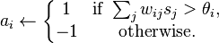
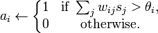
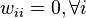
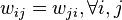
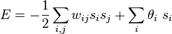
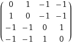
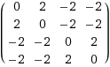

Hopfield Neural NetworkSunday, April 17, 2011
Hopfield neural network - is a form of recurrent artificial neural network, was first introduced by American scientist John Hopfield in 1982. This was the starting point of the new era of neural networks, which continues today.
Hopfield showed that models of physical systems could be used to solve computational problems. Such systems could be implemented in hardware by combining standard components such as capacitors and resistors. Application is limited due to theoretical limitations of the network structure but, in certain situations, they may form interesting models. Network can be used as associative memory, filter, or in solving optimization problems; typically used in classification problems, where the original image is converted into binary number vector.
Network architecture
The units in Hopfield nets are binary threshold units, i.e. the units only take on two different values for their states and the value is determined by whether or not the units' input exceeds their threshold. Hopfield nets can either have units that take on values of 1 or -1, or units that take on values of 1 or 0. So, the two possible definitions for unit i's activation, ai, are:
 Where:
- wij is the strength of the connection weight from unit j to unit i (the weight of the connection).
- sj is the state of unit j.
- θi is the threshold of unit i.
The connections in a Hopfield net typically have the following restrictions:
 (no unit has a connection with itself) (connections are symmetric)
The requirement that weights be symmetric is typically used, as it will guarantee that the energy function decreases monotonically while following the activation rules, and the network may exhibit some periodic or chaotic behavior if non-symmetric weights are used. However, Hopfield found that this chaotic behavior is confined to relatively small parts of the phase space, and does not impair the network's ability to act as a content-addressable associative memory system.
Hopfield nets have a scalar value associated with each state of the network referred to as the "energy", E, of the network, where:
This value is called the "energy" because the definition ensures that if units are randomly chosen to update their activations the network will converge to states which are local minima in the energy function (which is considered to be a Lyapunov function). Thus, if a state is a local minimum in the energy function it is a stable state for the network. Note that this energy function belongs to a general class of models in physics, under the name of Ising models; these in turn are a special case of Markov networks, since the associated probability measure, the Gibbs measure, has the Markov property.
Constructing the Hopfield Network
/** * This is an example that implements a Hopfield neural network. This example * network contains four fully connected neurons. * * @version 0.00 15 Apr 2011 * @author Andrey Pudov */ public class Hopfield { /** * The number of neurons in this neural network. */ private final int NETWORK_SIZE; /** * The weight matrix for the fully connected neurons. */ private int[][] matrix; public Hopfield(int size) { NETWORK_SIZE = size; matrix = new int[NETWORK_SIZE][NETWORK_SIZE]; for (int row = 0; row < NETWORK_SIZE; ++row) { for (int col = 0; col < NETWORK_SIZE; ++col) { matrix[row][col] = 0; } } } /** * Called when the neural network is to be ran against the input. */ protected int[] recognize(int[] input) { boolean[] pattern = new boolean[NETWORK_SIZE]; int[] output = new int[NETWORK_SIZE]; for (int row = 0; row < NETWORK_SIZE; ++row) { int i = input[row]; if (i == 0) { pattern[row] = false; } else { pattern[row] = true; } } Layer net = new Layer(matrix); net.activation(pattern); int row = 0; for (boolean i : net.getOutput()) { if (i) { output[row++] = 1; } else { output[row++] = 0; } } return output; } /** * Called to clear the weight matrix. */ public void clear() { for (int row = 0; row < NETWORK_SIZE; ++row) { for (int col = 0; col < NETWORK_SIZE; ++col) { matrix[row][col] = 0; } } } /** * Called to train the weight matrix based on the * current input pattern. */ public void train(int[] input) { int[][] work = new int[NETWORK_SIZE][NETWORK_SIZE]; int[] bi = new int[NETWORK_SIZE]; /* convert to bipolar (0 = -1, 1 = 1) */ for (int x = 0; x < NETWORK_SIZE; ++x) { if (input[x] == 0) { bi[x] = -1; } else { bi[x] = 1; } } /* multiply the matrix by its transposition */ for (int row = 0; row < NETWORK_SIZE; ++row) { for (int col = 0; col < NETWORK_SIZE; ++col) { work[row][col] = bi[row] * bi[col]; } } /* set the northwest diagonal to -1 */ for (int x = 0; x < NETWORK_SIZE; ++x) { work[x][x] -= 1; } /* add to the existing weight matrix */ for (int row = 0; row < NETWORK_SIZE; ++row) { for (int col = 0; col < NETWORK_SIZE; ++col) { int i = matrix[row][col]; matrix[row][col] = (i + work[row][col]); } } } }
Training the Network
The train method is responsible for adjusting the weight matrix so that the new pattern can be correctly recalled. This process takes several steps. You will now be shown how the network trains.
Training a Hopfield Network involves lowering the energy of states that the net should "remember". This allows the net to serve as a content addressable memory system, that is to say, the network will converge to a "remembered" state if it is given only part of the state. The net can be used to recover from a distorted input the trained state that is most similar to that input. This is called associative memory because it recovers memories on the basis of similarity. For example, if we train a Hopfield net with five units so that the state (1, 0, 1, 0, 1) is an energy minimum, and we give the network the state (1, 0, 0, 0, 1) it will converge to (1, 0, 1, 0, 1). Thus, the network is properly trained when the energy of states which the network should remember are local minima.
As the input is retrieve the values are converted to bipolar values. Conversion to bipolar simply involves converting every 0 to a –1 of a binary number; the output is stored in the bi array. This is done as follows:
/* convert to bipolar (0 = -1, 1 = 1) */ for (int x = 0; x < NETWORK_SIZE; ++x) { if (input[x] == 0) { bi[x] = -1; } else { bi[x] = 1; } }
The next step is to multiply the input sequence by its transposition. To perform this operation a new matrix is constructed, called work, that is perfectly square. Its width is determined by the width of the input sequence. Here each element of the work matrix is filled with a value that is derived by multiplying the value of the input sequence that contains the same row and column. This is done with the following code:
/* multiply the matrix by its transposition */ for (int row = 0; row < NETWORK_SIZE; ++row) { for (int col = 0; col < NETWORK_SIZE; ++col) { work[row][col] = bi[row] * bi[col]; } }
A Hopfield Neural network does not generally assign weights between the same neurons. For example, there would be no weight between neuron 0 and itself. The weight of each neuron back to itself must be set to –1 (0 in bipolar). This is done with the following code:
/* set the northwest diagonal to -1 */ for (int x = 0; x < NETWORK_SIZE; ++x) { work[x][x] -= 1; }
Finally the work matrix must be added to the existing weight matrix. This is done by taking each element of the work matrix and adding it to the corresponding element of the actual weight matrix.
/* add to the existing weight matrix */ for (int row = 0; row < NETWORK_SIZE; ++row) { for (int col = 0; col < NETWORK_SIZE; ++col) { int i = matrix[row][col]; matrix[row][col] = (i + work[row][col]); } }
Network operation
/** * @version 0.00 15 Apr 2011 * @author Andrey Pudov */ public class Layer{ /** * An array of neurons. */ private Neuron[] neurons; /** * The output of the neurons. */ private boolean[] output; /** * The number of neurons in this layer. And because this is a * single layer neural network, this is also the number of * neurons in the network. */ private int size; /** * A constant to multiply against the threshold function. * This is not used, and is set to 1. */ public static final double lambda=1.0; /** * The constructor. The weight matrix for the neurons must be passed in. * Because this is a single layer network the weight array should always be * perfectly square(i.e. 4x4). These weights are used to initialize the * neurons. * * @param weights A 2d array that contains the weights between each * neuron and the other neurons */ public Layer(int[][]weights){ size = weights[0].length; neurons = newNeuron[size]; output = newboolean[size]; for(int i=0;i<size;i++){ neurons[i] = newNeuron(weights[i]); } } /** * The threshold method is used to determine if the neural * network will fire for a given pattern. This threshold * uses the hyperbolic tangent (tanh). * * @param k The product of the neuron weights and the input pattern. * @return Whether to fire or not to fire. */ public boolean threshold(int k){ return(StrictMath.tanh(k) >= 0); } /** * This method is called to actually run the neural network. * * @param pattern The input pattern to present to the neural network. */ public void activation(boolean[]pattern){ int i,j; for(i=0;i<size;++i){ neurons[i].setActivation(neurons[i].act(pattern)); output[i] = threshold(neurons[i].getActivation()); } } public boolean[]getOutput(){ return output; } }
When the constructor is called for the Layer class, the weight matrix is passed in. This will allow the Layer class to determine what the output should be for a given input pattern. To determine the output sequence, an input sequence should be passed to the activation method of the Layer class. The activation method calls the each of the neurons to determine their output. The following code does this:
for(i=0; i < size; ++i){ neurons[i].setActivation(neurons[i].act(pattern)); output[i] = threshold(neurons[i].getActivation()); }
The above loop stores each neuron’s activation value in the same neuron. Each activation is determined by calling the act method of the Neuron. To see how each neuron calculates its activation we must first examine the Neuron class:
/** * @version 0.00 15 Apr 2011 * @author Andrey Pudov */ public class Neuron { /** * The weights between this neuron and the other neurons on * the layer. */ private int[] weightv; /** * Activation results for this neuron. */ private int activation; /** * The constructor. The weights between this neuron and * every other neuron(including itself) is passed in as * an array. Usually the weight between this neuron and * itself is zero. * * @param in The weight vector. */ public Neuron(int[]in){ weightv = in; } /** * This method is called to determine if the neuron would * activate, or fire. * * @param x Neuron input * @return If the neuron would activate, or fire */ public int act(boolean[]x){ int i; int a = 0; for(i=0; i<x.length; i++){ if(x[i]){ a += weightv[i]; } } return a; } public int getActivation(){ return activation; } public void setActivation(int activation){ this.activation = activation; } }
To calculate a neuron’s activation, that neuron simply sums all of its weight values. Only those weight values that have a 1 in the input pattern are calculated. This is accomplished by using the following code:
for(i=0; i < x.length; i++){ if(x[i]){ a += weightv[i]; } }
Step-by-step example
Hopfield hopfield = new Hopfield(4); hopfield.train(new int[] {1,1,0,0}); hopfield.train(new int[] {0,0,1,1}); for(int i : hopfield.recognize(new int[] {0,0,1,0})){ System.out.print(i); }
-
Training for {1, 1, 0, 0}:
- bipolar vector (bi): {1, 1, -1, -1}
- work matrix (work): 
- weight matrix (matrix):
-
Training for {1, 1, 0, 0}:
- bipolar vector (bi): {1, 1, -1, -1}
- work matrix (work):
- weight matrix (matrix): 
Result of recognition pattern {0, 0, 1, 0}: {0, 0, 1, 1}.